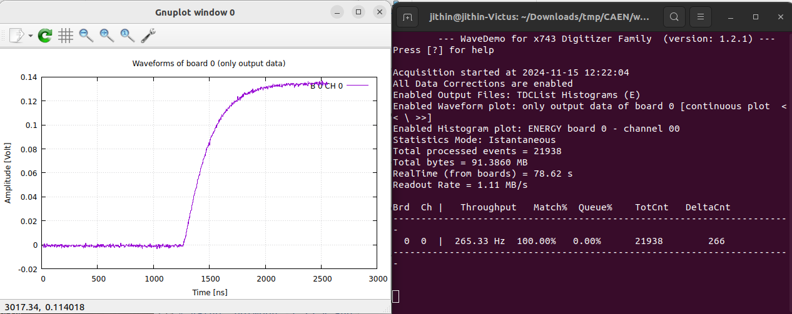
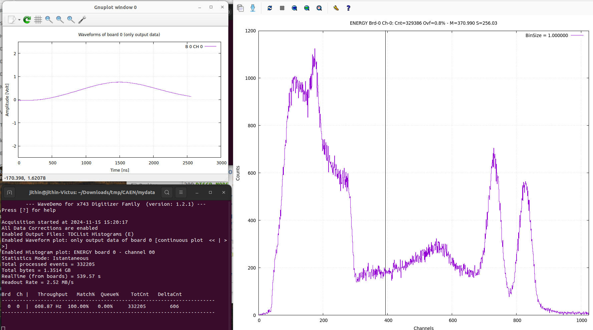
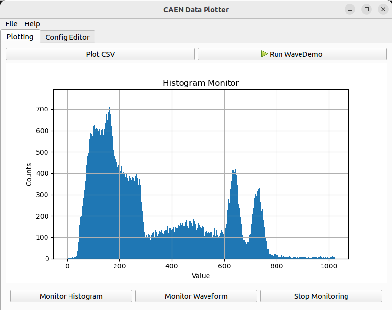

CAEN Digitizer data collection and viewing on Ubuntu¶
DT5743 is what i have, but the instructions will work for a wide range
Setup toolchain¶
Install Packages from CAEN
- CAENVMELib-v4.0.2
- CAENComm-v1.7.0
- CAENDigitizer-v2.17.3
- CAENUSBdrvB-v1.6.0 : Get specific drivers for your device from CAEN
- caenwavedemo_x743-1.2.1
Installing¶
Dependencies : glibc and libusb are required. along with the build tools like make.
you can check glibc version
jithin@jithin-Victus:~$ ldd –version | head -n1 ldd (Ubuntu GLIBC 2.35-0ubuntu3.8) 2.35
minimum version 2.11 is asked by CAEN.
The first 4 packages are simply sudo ./install_x64 , except the USBdrv where you make need to do make followed by sudo make install if you do not want to use DKMS.
There are some sample programs inside CAENDigitizer which you can try to compile using make
Wavedemo¶
gnuplot is needed. you can get it from synaptic.
There seems to be a redefinition bug in include/Wavedemo.h for which Cursor easily suggested a fix. Change the enum definitions in that file to what’s shown below to avoid redefinition errors.
typedef enum {
WPLOT_MODE_1BD, //plots only output waveforms of one board at a time without any processing
WPLOT_MODE_1CH, //plots analogue and digital waveforms of one channel at a time
WPLOT_MODE_STD, //plots analogue and digital waveforms of events
WPLOT_MODE_DUMMY_LAST
} WPLOT_MODE_t;
typedef enum {
HPLOT_DISABLED,
HPLOT_TIME,
HPLOT_ENERGY,
HPLOT_TYPE_DUMMY_LAST
} HPLOT_TYPE_t;
MAKE and INSTALLATION
./configure CFLAGS=-O2
make
sudo make install
Execute Wavedemo. User Manual¶

WaveDemo_x743 WaveDemoConfig.ini
The config file contains all info. I have attached my config file below. Notice that I have set all SAVE_DATA options to NO because it fills up a few gigs within minutes, and I only have like 2GB of space left :(
WaveDemoConfig.ini : I am only using CH0 on board 1
# ****************************************************************
# WaveDemo_x743 Configuration File
# ****************************************************************
# ----------------------------------------------------------------
# Board Connection Parameters
# ----------------------------------------------------------------
[CONNECTIONS]
# OPEN <N>: open the digitizer
# options: USB 0 0 Desktop/NIM digitizer through USB (direct to USB)
# USB 0 BA VME digitizer through USB-V1718/V3718 (BA = BaseAddress of the VME board, 32 bit hex)
# PCI 0 0 0 Desktop/NIM/VME through CONET (optical link)
# PCI 0 0 BA VME digitizer through V2718/V3718 (BA = BaseAddress of the VME board, 32 bit hex)
# USB_A4818 X 0 0 Desktop/NIM digitizer through USB->A4818->CONET (X is the PID (product id) of A4818)
# USB_A4818_V2718 X 0 BA VME digitizer through USB-A4818-V2718 (BA = BaseAddress of the VME board, 32 bit hex) (X is the PID (product id) of A4818)
# USB_A4818_V3718 X 0 BA VME digitizer through USB-A4818-V3718 (BA = BaseAddress of the VME board, 32 bit hex) (X is the PID (product id) of A4818)
# USB_A4818_V4718 X 0 BA VME digitizer through USB-A4818-V4718 (BA = BaseAddress of the VME board, 32 bit hex) (X is the PID (product id) of A4818)
# ETH_V4718 IP 0 BA VME digitizer through ETH-V4718 (BA = BaseAddress of the VME board, 32 bit hex) (IP is the IP Address of the V4718)
# USB_V4718 X 0 BA VME digitizer through USB-V4718 (BA = BaseAddress of the VME board, 32 bit hex) (X is the PID (product id) of V4718)
#
# for multiple boards, OPEN 0 indicates the master board
# example for using two VME digitizer through USB-V1718 (uncomment the two lines below)
#OPEN 0 = USB 0 32110000
#OPEN 1 = USB 0 32100000
# example for using two VME digitizer through ETH-V4718 (uncomment the two lines below)
#OPEN 0 = ETH_V4718 192.168.1.254 0 32110000
#OPEN 1 = ETH_V4718 192.168.1.254 0 32100000
# examples for using one digitizer (uncomment just one of the lines below)
OPEN 0 = USB 0 0
#OPEN 0 = USB 0 32100000
#OPEN 0 = PCI 0 0 0
#OPEN 0 = PCI 0 0 32100000
#OPEN 0 = ETH_V4718 192.168.1.254 0 32100000
#OPEN 0 = USB_V4718 12345 0 32100000
#OPEN 0 = USB_A4818 12345 0 0
#OPEN 0 = USB_A4818_V2718 12345 0 32100000
# ----------------------------------------------------------------
# Program options
# ----------------------------------------------------------------
[OPTIONS]
# GNUPLOT_PATH: path to gnuplot executable file (optional if it is already in environment variables)
GNUPLOT_PATH = /usr/bin/
# DATAFILE_PATH: path to save output file (the folder will be created if it does not exist)
DATAFILE_PATH = ./data_output/
# SAVE_RAW_DATA: enable/disable raw data file saving
SAVE_RAW_DATA = NO
# SAVE_TDC_LIST: enable/disable saving of the Trigger Time Tag list
SAVE_TDC_LIST = YES
# SAVE_WAVEFORM: enable/disable waveform file saving (of filtered events)
SAVE_WAVEFORM = NO
# SAVE_ENERGY_HISTOGRAM: enable/disable file saving with energy histogram
SAVE_ENERGY_HISTOGRAM = YES
# SAVE_TIME_HISTOGRAM: enable/disable file saving with time histogram
SAVE_TIME_HISTOGRAM = NO
# SAVE_LISTS: enable/disable list file saving (of filtered events)
SAVE_LISTS = NO
# SAVE_RUN_INFO: enable run info file saving
SAVE_RUN_INFO = NO
# OUTPUT_FILE_FORMAT: output file can be either ASCII or binary (raw data files are always binary)
# options: BINARY, ASCII
OUTPUT_FILE_FORMAT = ASCII
# OUTPUT_FILE_HEADER: if enabled, the header is included in the output file data
# options: YES, NO
OUTPUT_FILE_HEADER = YES
# OUTPUT_FILE_TIMESTAMP_UNIT: unit for the time stamps in the output list files
# options: 0=ps, 1=ns, 2=us, 3=ms, 4=s
OUTPUT_FILE_TIMESTAMP_UNIT = 1
# STATS_ENABLE: enable/disable updating and printing statistics while acquisition
# options: YES, NO
STATS_RUN_ENABLE = YES
# PLOT_ENABLE: enable/disable waveform plotting when the run starts
# options: YES, NO
PLOT_RUN_ENABLE = YES
# DGTZ_RESET: specify if the boards are reset before their programming
# options: YES, NO
DGTZ_RESET = YES
# SYNC_ENABLE: enable for working with multiple boards synchronized
# options: YES, NO (N.B.: if enabled you must use TRIGGER_TYPE = EXTERN)
SYNC_ENABLE = NO
# TRIGGER_FIXED: fix the trigger of the reference channel in percent of the whole acquisition window
# values: 10 to 90 (%) (default = 20)
TRIGGER_FIXED = 20
# BOARD_REF: Board to which the CHANNEL_REF belongs
BOARD_REF = 0
# CHANNEL_REF: Channel used as a start in the TOF measurements
CHANNEL_REF = 0
## ##
### Histogram options ##
## ##
# ENERGY_H_NBIN: Number of bins in the energy histogram
# values: 1K, 2K, 4K, 8K, 16K
ENERGY_H_NBIN = 4K
# TIME_H_NBIN: Number of bins in the time histogram
# values: 256, 512, 1K, 2K, 4K, 8K, 16K
TIME_H_NBIN = 1K
# TIME_H_MODE: Time histogram mode
# options: START_STOP (time from a common reference channel), INTERVALS (time between consecutive events)
TIME_H_MODE = START_STOP
# TIME_H_MIN: Lower time value used to make time histogram (in ns)
TIME_H_MIN = -16
# TIME_H_MAX: Upper time value used to make time histogram (in ns)
TIME_H_MAX = 16
# ----------------------------------------------------------------
# Common Setting (applied to all channels as default value)
# ----------------------------------------------------------------
[COMMON]
# INPUT_ENABLE: all channels can be enable/disable by default (can be individually enable/disable in [BOARD x - CHANNEL n] sections)
# options: YES, NO
INPUT_ENABLE = NO
# SAMPLING_FREQUENCY
# options: 0 = 3.2 GHz, 1 = 1.6 GHz, 2 = 800 MHz, 3 = 400 MHz
SAMPLING_FREQUENCY = 3
# INL_CORRECTION_ENABLE: enable the Integral Non Linearity correction for the acquired data
# options: YES, NO
INL_CORRECTION_ENABLE = YES
# TRIGGER_TYPE
# options: SOFTWARE (trigger command is generated by the software),
# NORMAL (the signals will be recorded in the enabled channels upon the channel self trigger capability),
# EXTERNAL (trigger only on signals received from TRG-IN input),
# ADVANCED (allows separate settings, see EXTERNAL_TRIGGER, SOFTWARE_TRIGGER and CHANNEL_SELF_TRIGGER)
#TRIGGER_TYPE = EXTERNAL
TRIGGER_TYPE = NORMAL
# EXTERNAL_TRIGGER: external trigger input settings.
# SOFTWARE_TRIGGER: software trigger settings.
# CHANNEL_SELF_TRIGGER: channel auto trigger settings.
# When enabled, the specific trigger can be either propagated (ACQUISITION_AND_TRGOUT / TRGOUT_ONLY) or not (ACQUISITION_ONLY) through the TRGOUT
# options: DISABLED, ACQUISITION_ONLY, ACQUISITION_AND_TRGOUT, TRGOUT_ONLY
# These settings work if TRIGGER_TYPE is set on ADVANCED.
#EXTERNAL_TRIGGER = ACQUISITION_ONLY
#SOFTWARE_TRIGGER = ACQUISITION_ONLY
#CHANNEL_SELF_TRIGGER = ACQUISITION_ONLY
# CHANNEL_TRIGGER_ENABLE: channel auto trigger settings. (can be individually enable/disable in [BOARD x - CHANNEL n] sections)
# options: YES, NO
CHANNEL_TRIGGER_ENABLE = YES
# RECORD_LENGTH = number of samples in the acquisition window
# values: multiple of 16 (min = 16, max = 1024)
RECORD_LENGTH = 1024
# POST_TRIGGER: delay added to the trigger in the front-end FPGA before the acquisition is stopped. Units are in periods of the SAMLONG chips write clock (see V1743 userl Manual).
# values: 1 to 255
POST_TRIGGER = 20
# TRIGGER_EDGE: decides whether the trigger occurs on the rising or falling edge of the signal
# options: RISING, FALLING
TRIGGER_EDGE = RISING
# TRIGGER_THRESHOLD: threshold for the channel auto trigger
# value: between -1.25 V and 1.25 V
TRIGGER_THRESHOLD = 0.1
# PULSE_POLARITY: input signal polarity
# options: POSITIVE, NEGATIVE
PULSE_POLARITY = POSITIVE
# FPIO_LEVEL: type of the front panel I/O LEMO connectors
# options: NIM, TTL
FPIO_LEVEL = NIM
# DC_OFFSET: DC offset adjust (DAC channel setting)
# value: between -1.25 V and 1.25 V
DC_OFFSET = 0
## ##
### Waveforms processing options ##
## ##
# GATE_WIDTH: gate width (in ns)
GATE_WIDTH = 150
# PRE_GATE: portion of the gate before the trigger (in ns)
PRE_GATE = 10
# NS_BASELINE: Number of Samples for the input baseline calculation
NS_BASELINE = 15
# DISCR_MODE: Discriminator mode
# options: LED, CFD
DISCR_MODE = CFD
# CFD_DELAY: CFD delay (in ns)
CFD_DELAY = 40
# CFD_ATTEN: CFD attenuation
# value: between 0.0 and 1.0
CFD_ATTEN = 0.2
# TTF_SMOOTHING: smoothing
# options: 0 = disabled, 1, 2, 3, 4 => 2, 4, 8, 16 samples
TTF_SMOOTHING = 0
## ##
### Register write ##
## ##
# WRITE_REGISTER: generic write register access. This command allows the user to have a direct write access to the
# registers of the board. NOTE: all the direct write accesses are executed before the other setting, thus it might
# happen that one specific setting overwrites the register content.
# Syntax: WRITE_REGISTER ADDRESS DATA, where ADDRESS is the address offset of the register (16 bit hex)
# and DATA is the value being written (31 bit hex)
# Example: WRITE_REGISTER 1080 00000010 # Set the threshold of channel 0 to 16 ADC counts (hex 10)
# WRITE_REGISTER 8168 8
#WRITE_REGISTER = 8100 FFFFFFFB 4
# ----------------------------------------------------------------
# Individual Settings
# ----------------------------------------------------------------
# The following setting are usually applied on channel by channel
# basis; however, you can put them also in the [COMMON] section in
# order to apply them to all channels.
# [BOARD N]: options in this section are applies at all channel of the board N (it can overwrite the same option in [COMMON])
# [BOARD N - CHANNEL M]: option are applies at channel M of the board N (it can override the same option in [BOARD N])
# ----------------------------------------------------------------
# INPUT_ENABLE: enable/disable one channel
# options: YES, NO
# CHANNEL_TRIGGER_ENABLE: channel auto trigger settings.
# options: YES, NO
# DC_OFFSET: DC offset adjust
# value: between -1.25 V and 1.25 V
# TRIGGER_THRESHOLD: threshold for the channel auto trigger
# value: between -1.25 V and 1.25 V
# TRIGGER_EDGE: decides whether the trigger occurs on the rising or falling edge of the signal
# options: RISING, FALLING
# PULSE_POLARITY: input signal polarity
# options: POSITIVE, NEGATIVE
[BOARD 0]
INPUT_ENABLE = NO
[BOARD 0 - CHANNEL 0]
INPUT_ENABLE = YES
DC_OFFSET = 0
TRIGGER_EDGE = RISING
PULSE_POLARITY = POSITIVE
TRIGGER_THRESHOLD = 0.1
[BOARD 0 - CHANNEL 1]
INPUT_ENABLE = NO
DC_OFFSET = 0
TRIGGER_EDGE = RISING
PULSE_POLARITY = POSITIVE
TRIGGER_THRESHOLD = +0.2
[BOARD 0 - CHANNEL 2]
INPUT_ENABLE = NO
[BOARD 0 - CHANNEL 3]
INPUT_ENABLE = NO
[BOARD 1]
INPUT_ENABLE = NO
[BOARD 1 - CHANNEL 0]
INPUT_ENABLE = NO
Tweak the config file, and run it. Good luck!
This is a terminal utility, but shows spectra with Gnuplot. There are shortcut keys which you can check by pressing ? .
Some useful ones:
h: Enable histogram (Counts, Time) . Press again to make Counts, Channels.qy: Quit, yes.ey: Clear data, yes.
Success¶
I input the waveform from a shaping amplifier. 60Co -> 2x2PMT -> preamp -> shaper -> CAEN5743 , and got this plot.

Graphical interface with PyQt¶
So i’ve spun up a graphical interface for lazy folks. it does not use the library, but instead polls the files created by wavedemo. it also includes an editor to tweak the config file (saves automagically when you go back to the other tab)

Source Code : graph.py
import sys
import numpy as np
from PyQt5.QtWidgets import (QApplication, QMainWindow, QWidget, QVBoxLayout,
QHBoxLayout, QLineEdit, QPushButton, QLabel, QFileDialog, QMenuBar, QMenu, QMessageBox, QToolBar, QTabWidget, QTextEdit)
from PyQt5.QtCore import Qt, QProcess, QTimer
from PyQt5.QtGui import QTextCursor, QIcon
import matplotlib.pyplot as plt
from matplotlib.backends.backend_qt5agg import FigureCanvasQTAgg as FigureCanvas
from matplotlib.figure import Figure
import pandas as pd
import os
import time
from subprocess import Popen
class GraphingCalculator(QMainWindow):
monitoring_histogram = False
monitoring_waveform = False
def __init__(self):
super().__init__()
self.setWindowTitle("CAEN Data Plotter")
self.setGeometry(100, 100, 800, 600)
# Initialize timers
self.histo_timer = QTimer()
self.wave_timer = QTimer()
self.histo_timer.timeout.connect(self.update_histogram)
self.wave_timer.timeout.connect(self.update_waveform)
# Initialize last modification times
self.last_histo_mtime = 0
self.last_wave_mtime = 0
# Create menu bar and toolbar
self.create_menu_bar()
# Create tab widget
self.tab_widget = QTabWidget()
self.setCentralWidget(self.tab_widget)
# Create and add plotting tab
self.plot_widget = QWidget()
self.setup_plot_tab()
self.tab_widget.addTab(self.plot_widget, "Plotting")
# Create and add config editor tab
self.config_widget = QWidget()
self.setup_config_tab()
self.tab_widget.addTab(self.config_widget, "Config Editor")
# Connect tab change signal
self.tab_widget.currentChanged.connect(self.on_tab_changed)
# Store the last active tab
self.last_tab_index = 0
def setup_plot_tab(self):
"""Setup the plotting interface tab"""
main_layout = QVBoxLayout(self.plot_widget)
# Create input area
input_layout = QHBoxLayout()
csv_button = QPushButton("Plot CSV")
wave_demo_button = QPushButton("Run WaveDemo")
wave_demo_button.setIcon(QIcon.fromTheme("media-playback-start"))
csv_button.clicked.connect(self.plot_csv)
wave_demo_button.clicked.connect(self.run_wave_demo)
input_layout.addWidget(csv_button)
input_layout.addWidget(wave_demo_button)
main_layout.addLayout(input_layout)
# Create matplotlib figure
self.figure = Figure(figsize=(8, 6))
self.canvas = FigureCanvas(self.figure)
main_layout.addWidget(self.canvas)
# Add control panel
self.control_panel = QWidget()
control_layout = QHBoxLayout(self.control_panel)
# Add control buttons
self.monitor_hist_button = QPushButton("Monitor Histogram")
self.monitor_wave_button = QPushButton("Monitor Waveform")
self.stop_monitor_button = QPushButton("Stop Monitoring")
self.monitor_hist_button.clicked.connect(self.monitor_histogram)
self.monitor_wave_button.clicked.connect(self.monitor_waveform)
self.stop_monitor_button.clicked.connect(self.stop_monitoring)
control_layout.addWidget(self.monitor_hist_button)
control_layout.addWidget(self.monitor_wave_button)
control_layout.addWidget(self.stop_monitor_button)
main_layout.addWidget(self.control_panel)
self.control_panel.hide()
def setup_config_tab(self):
"""Setup the config editor tab"""
config_layout = QVBoxLayout(self.config_widget)
# Add text editor
self.config_editor = QTextEdit()
config_layout.addWidget(self.config_editor)
# Load config file if it exists
self.load_config_file()
def load_config_file(self):
"""Load the WaveDemoConfig.ini file into the editor"""
try:
config_file = "WaveDemoConfig.ini"
if os.path.exists(config_file):
with open(config_file, 'r') as f:
self.config_editor.setText(f.read())
else:
self.config_editor.setText("# WaveDemoConfig.ini not found")
except Exception as e:
print(f"Error loading config file: {str(e)}")
def save_config_file(self):
"""Save the config file"""
try:
config_file = "WaveDemoConfig.ini"
with open(config_file, 'w') as f:
f.write(self.config_editor.toPlainText())
print("Config file saved successfully")
except Exception as e:
print(f"Error saving config file: {str(e)}")
def on_tab_changed(self, index):
"""Handle tab changes"""
# If we're leaving the config editor tab, save the file
if self.last_tab_index == 1: # Config editor tab index
self.save_config_file()
# If we're entering the config editor tab, reload the file
if index == 1:
self.load_config_file()
self.last_tab_index = index
def create_menu_bar(self):
"""Create the menu bar with File and Help menus"""
menubar = self.menuBar()
# File menu
file_menu = menubar.addMenu('File')
# Add Exit action to File menu
exit_action = file_menu.addAction('Exit')
exit_action.triggered.connect(self.close)
# Help menu
help_menu = menubar.addMenu('Help')
# Add About action to Help menu
about_action = help_menu.addAction('About')
about_action.triggered.connect(self.show_about_dialog)
def show_about_dialog(self):
"""Show the About dialog with software information"""
about_text = """
<h3>CAEN Digitizer Data Plotter</h3>
<p>This software is designed to visualize data from CAEN Multi Channel Analyzers
and Digitizers. It provides real-time monitoring of both waveforms and histograms
generated by the CAEN hardware.</p>
<p><b>Features:</b></p>
<ul>
<li>Real-time waveform monitoring</li>
<li>Real-time histogram monitoring</li>
<li>CSV data plotting capabilities</li>
<li>Integration with CAEN WaveDemo software</li>
</ul>
<p><b>Developer:</b><br>
Jithin B.P.<br>
<a href="mailto:jithinbp@gmail.com">jithinbp@gmail.com</a></p>
<p><b>Version:</b> 1.0</p>
"""
QMessageBox.about(self, "About CAEN Data Plotter", about_text)
def plot_csv(self):
"""Open and plot a CSV file"""
try:
filename, _ = QFileDialog.getOpenFileName(self, "Open CSV File", "", "CSV Files (*.csv);;Text Files (*.txt)")
if filename:
data = self.read_data_file(filename)
if data is not None:
self.plot_data(data, "CSV Plot", "X", "Y")
except Exception as e:
print(f"Error plotting CSV: {str(e)}")
def read_data_file(self, filename):
"""Read data from a file and return x, y data and labels"""
try:
df = pd.read_csv(filename, delimiter='\s+', header=None)
if len(df.columns) >= 2:
# Multi-column case: use first two columns
x_data = df.iloc[:, 0]
y_data = df.iloc[:, 1]
else:
# Single-column case: generate x values automatically
y_data = df.iloc[:, 0]
x_data = np.arange(len(y_data))
return {'x': x_data, 'y': y_data}
except Exception as e:
print(f"Error reading file {filename}: {str(e)}")
return None
def plot_data(self, data, title, xlabel, ylabel, plot_type='line'):
"""Generic plotting function for both line plots and histograms"""
try:
self.figure.clear()
self.ax = self.figure.add_subplot(111)
if plot_type == 'line':
self.ax.plot(data['x'], data['y'])
elif plot_type == 'histogram':
self.ax.bar(np.arange(len(data['y'])), data['y'], width=1)
self.ax.set_title(title)
self.ax.set_xlabel(xlabel)
self.ax.set_ylabel(ylabel)
self.ax.grid(True)
self.canvas.draw()
except Exception as e:
print(f"Error plotting data: {str(e)}")
def run_wave_demo(self):
"""Run the WaveDemo command in a new gnome-terminal"""
try:
# Launch terminal with a unique title
terminal_title = "wavedemo_terminal"
cmd = f'gnome-terminal --title="{terminal_title}" -- bash -c "WaveDemo_x743 WaveDemoConfig.ini; read -p \'Press Enter to close...\'"'
QProcess.startDetached('gnome-terminal', ['--title', terminal_title, '--', 'bash', '-c', 'WaveDemo_x743 WaveDemoConfig.ini; read -p "Press Enter to close..."'])
# Give terminal time to open
time.sleep(1)
# Show the control panel after launching WaveDemo
self.control_panel.show()
except Exception as e:
print(f"Error launching terminal: {str(e)}")
def monitor_histogram(self):
"""Start histogram monitoring"""
# Stop waveform monitoring if active
if self.monitoring_waveform:
self.wave_timer.stop()
self.monitoring_waveform = False
# Start histogram monitoring
self.monitoring_histogram = True
self.histo_timer.start(100) # Poll every 100ms
# Initialize the plot
self.figure.clear()
self.ax = self.figure.add_subplot(111)
self.ax.set_title("Histogram Monitor")
self.ax.grid(True)
self.canvas.draw()
def monitor_waveform(self):
"""Start waveform monitoring"""
# Stop histogram monitoring if active
if self.monitoring_histogram:
self.histo_timer.stop()
self.monitoring_histogram = False
# Start waveform monitoring
self.monitoring_waveform = True
self.wave_timer.start(100) # Poll every 100ms
# Initialize the plot
self.figure.clear()
self.ax = self.figure.add_subplot(111)
self.ax.set_title("Waveform Monitor")
self.ax.grid(True)
self.canvas.draw()
def stop_monitoring(self):
"""Stop all monitoring"""
self.monitoring_histogram = False
self.monitoring_waveform = False
self.histo_timer.stop()
self.wave_timer.stop()
def update_histogram(self):
"""Update histogram plot from file"""
try:
filename = "PlotHistoData.txt"
if not os.path.exists(filename):
return
# Check if file has been modified
mtime = os.path.getmtime(filename)
if mtime <= self.last_histo_mtime:
return
self.last_histo_mtime = mtime
data = self.read_data_file(filename)
if data is not None:
self.plot_data(data, "Histogram Monitor", "Value", "Counts", plot_type='histogram')
except Exception as e:
print(f"Error updating histogram: {str(e)}")
def update_waveform(self):
"""Update waveform plot from file"""
try:
filename = "PlotWavesData.txt"
if not os.path.exists(filename):
return
# Check if file has been modified
mtime = os.path.getmtime(filename)
if mtime <= self.last_wave_mtime:
return
self.last_wave_mtime = mtime
data = self.read_data_file(filename)
if data is not None:
self.plot_data(data, "Waveform Monitor", "Time", "Amplitude", plot_type='line')
except Exception as e:
print(f"Error updating waveform: {str(e)}")
if __name__ == '__main__':
app = QApplication(sys.argv)
calculator = GraphingCalculator()
calculator.show()
sys.exit(app.exec_())
Dependencies : PyQt5 , matplotlib, numpy